CS184/284A Fall 2026 Homework 1 Write-Up
Link to webpage: cal-cs184-student.github.io/hw1-tea-engine-writeup/
Link to GitHub repository: github.com/cal-cs184-student/hw1-tea-engine
|
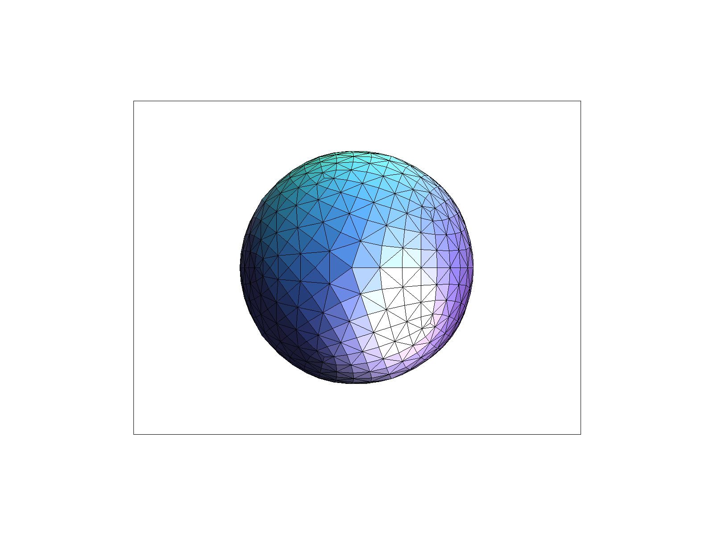 |
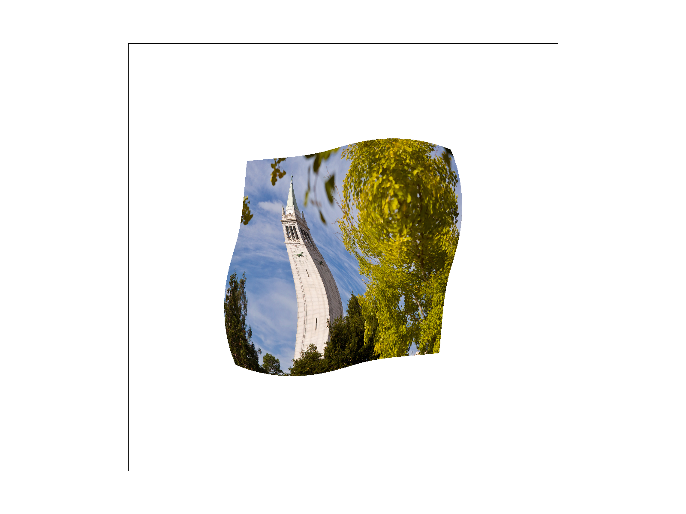 |

|
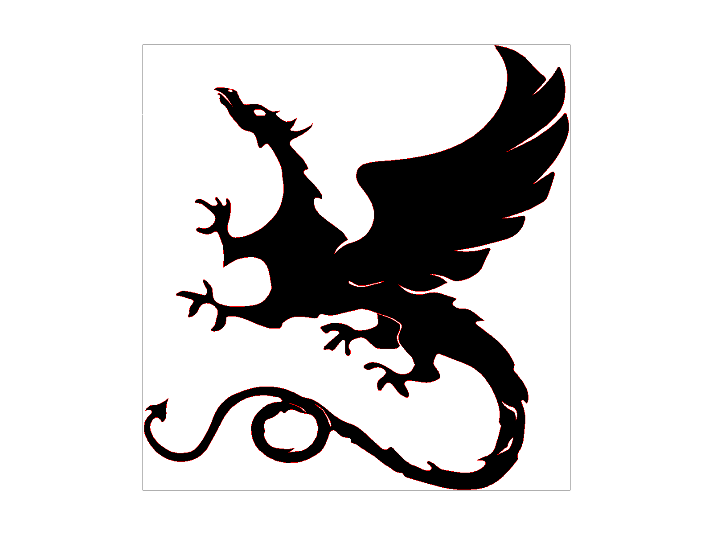 |
Overview
This project has been really enlightning for me! I'm big on game development especially with Unity and I've always remembered playing around with different settings on the engine like filtering methods, anti-aliasing, etc. and not knowing at all what they were and only what effects they achieved, but with this project I've learned a good deal of how they work behind the scenes!I implemented a rasterization engine for svg image file types that are able to rasterize triangles and implement anti-aliasing techniques (namely supersampling) as well as learning how to render textures and colors onto the triangles that we rasterize via barycentric coordinates that allow us to interpolate between vertices. Additionally I also learned about the issues with pixel footprint with textures where magnification and minification of textures can cause visual issues and how to use pixel filtering methods and mipmap level filtering methods to help alleviate some of these issues!
Task 1: Drawing Single-Color Triangles
At a high level rasterizing triangles is discretizing a continuous function by sampling the area defined by vertices of a triangle with the pixels on the screen. A rudimentary method to rasterize a triangle would be to check all pixels in an area (an area could be the triangle's bounding box or something more optimized) if they reside within the triangle (using some method to check if a pixel is inside the triangle such as the 3 plane method) and drawing a pixel at that position if it resides in the triangle. This results in a representation of a triangle within the resolution of pixels.My current rudimentary algorithm is checking each sample within a bounding box of the triangle so it is equal to the bounding box method. My current method scans the screen area's width and height from the lowest coordinate value to the greatest value, essentially checking every pixel within the square and running the Inside method on each sample and drawing whenever it is within the proposed triangle.
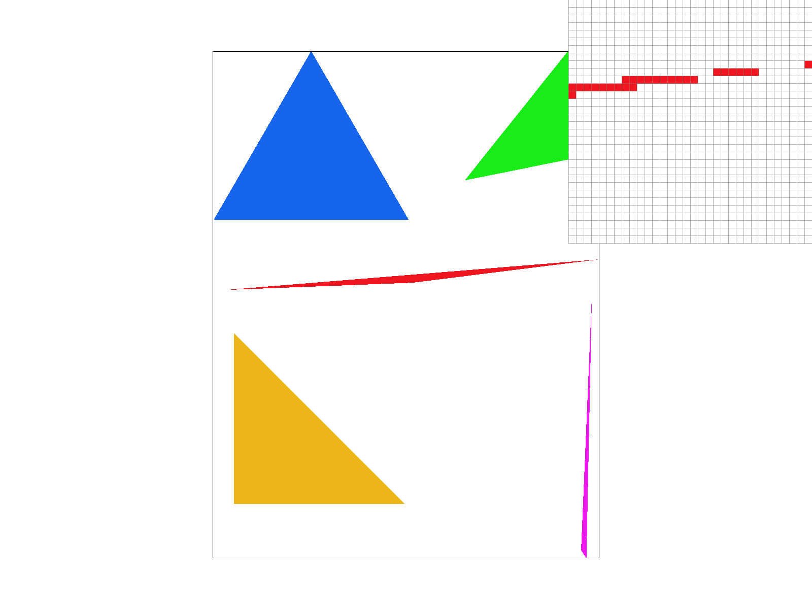
Task 2: Antialiasing by Supersampling
The data structure used in the supersampling algorithm was primarily the vector/array that was the sample_buffer and the framebuffer_target. This vector represents a linearized version of the 2D grid-like buffer. The framebuffer_target stores the actual resolution of the image we're trying to draw while the sample_buffer is the framebuffer_target but upscaled according to the sample_rate, for example when the sample rate is 4 (in which case we sample each pixel 4 times instead of 1), we create a new buffer that is 4 times as large as the original framebuffer_target and then rasterize as if we had the upscaled resolution. After rasterizing the upscaled sample_buffer, we then have to downscale it to the original resolution by taking an average of the areas (specifically sqrt(sample_rate) * sqrt(sample_rate) square) of the upscaled sample_buffer in order to turn the upscaled sample_buffer's resolution to match the framebuffer_target to anti-alias the original image via supersampling.Supersampling is useful as a method of anti-aliasing images, which gives rendered images softer edges and lowers the amount of "jaggies", and as we increase the sample rate of the super sampling, we get slightly smoother results. Since when we rasterize normally, we are discretizing a continuous function and analogous to signal processing, when we sample at a rate too few, our sampled "signal"/image is no longer representative of the original; so we can use supersampling to increase our sample rate.
The modifications I made to the rasterization algorithm for triangles was essentially to write to the sample_buffer that was upscaled by the sample_rate, which in other words is to rasterize normally but with the resolution increased, with the resolution being reconciled later on in the resolve_to_framebuffer where the each actual pixel in the framebuffer_target would average the color of the corresponding area of the sample_buffer to provide softer edges and alleviate some of the jaggies effect.
Super-sampling Anti-Aliasing in action!! You can see as the sample rate increases, the effects of aliasing are less apparent
|
|
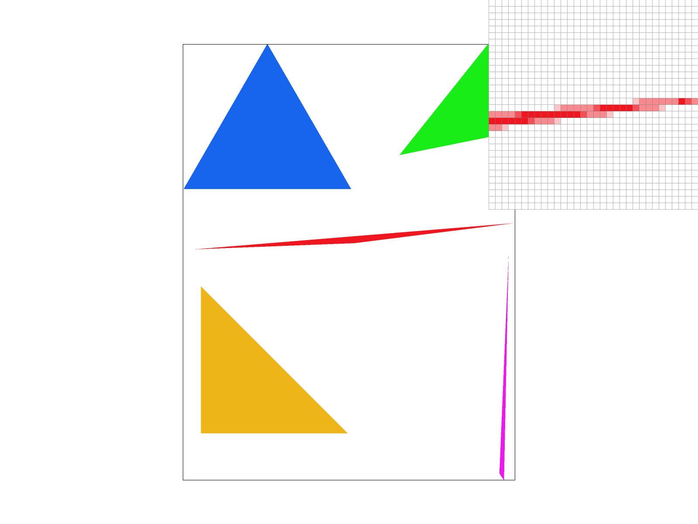 |
|
|
|
These effects are observed due to how supersampling alleviates some of the jaggies and aliasing effects. As you can see in the progression of images, the edges of the shapes get softer since the pixels that would usually be excluded from non-supersampling rasterization are actually included but are instead the average of the area around them (per the sample_rate) resulting in slightly faded reds near the edges since they average both the red next to them and the blank white behind them.
Task 3: Transforms
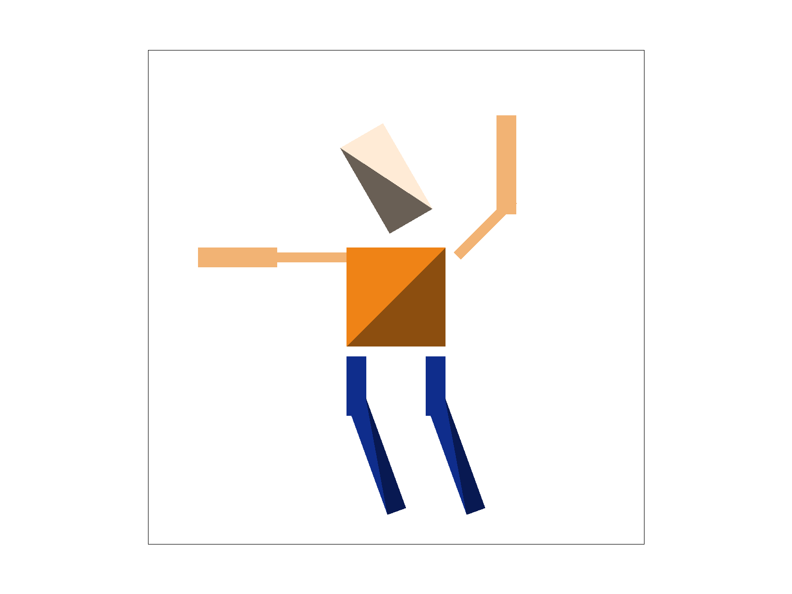
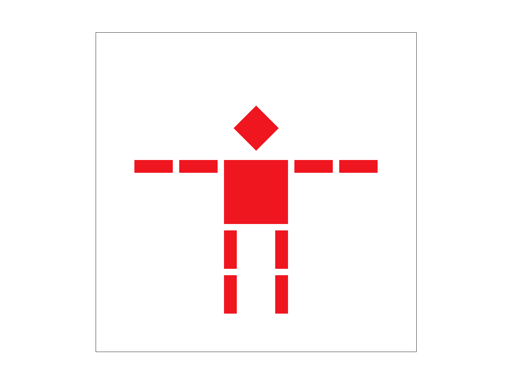
Task 4: Barycentric coordinates
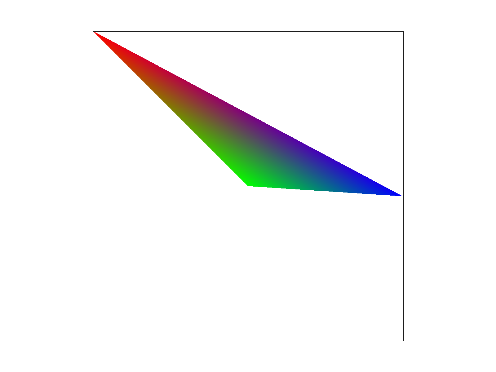
Let A, B and C be vertices of a triangle, and α and β be non-negative numbers between 0 and 1:
-
f(x,y) = A + α(B - A) + β(C - A)
-
f(x, y) = A + αB - αA + βC - βA
- f(x, y) = (1 - α - β)A + αB + βC
- f(x, y) = γA + αB + βC
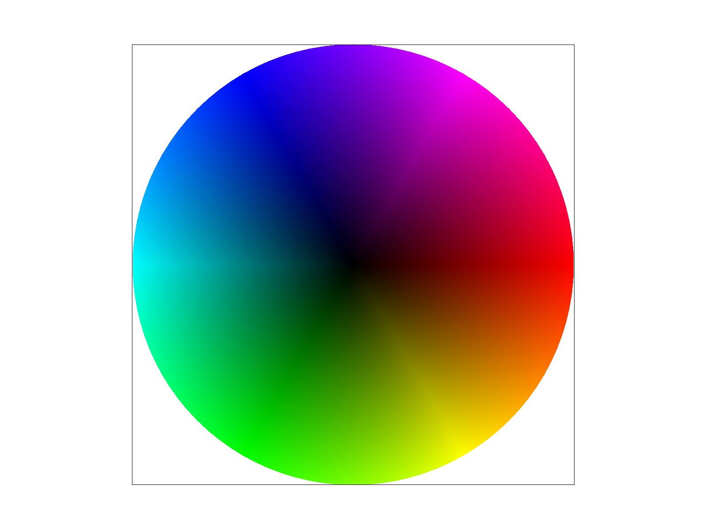
Task 5: "Pixel sampling" for texture mapping
"Pixel sampling" is the method in which we select the pixels in a texture map (dubbed texels) and apply them to a triangle. We perform this in a very similar way to how we applied interpolated colors with barycentric coordinates, essentially making discrete points into a continuous function. I implemented them to perform texture mapping by using barycentric coordinates and the UV coordinates assigned at each vertex to interpolate the UV coordinates across the triangle and apply the corresponding UV coordinates from the textures, taking the texels and coloring them onto the triangle.There are 2 different methods of pixel sampling, namely nearest (also referred to as point) and bilinear. The nearest pixel sampling method then given a uv coordinate along the texture map returns the closest texel to the inputted UV coordinate, and as a result can appear as more "pixel-y" and have more jaggies and moire effects on the texture.
Bilinear sampling instead alleviates some of the issues of the point filter by interpolating the 4 nearest texels surrounding the inputted UV value, allowing for a more smooth texture. Fun fact: Bilinear is named bilinear because it interpolates in two directions, first in one direction (interpolates top and bottom 2 pixels) and then interpolates the results of those!|
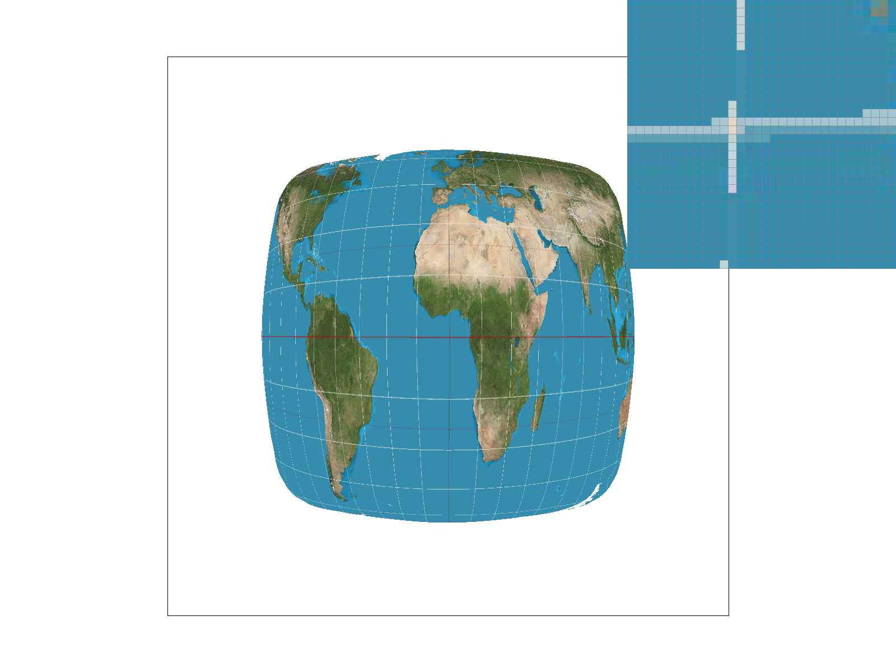 |
|
|
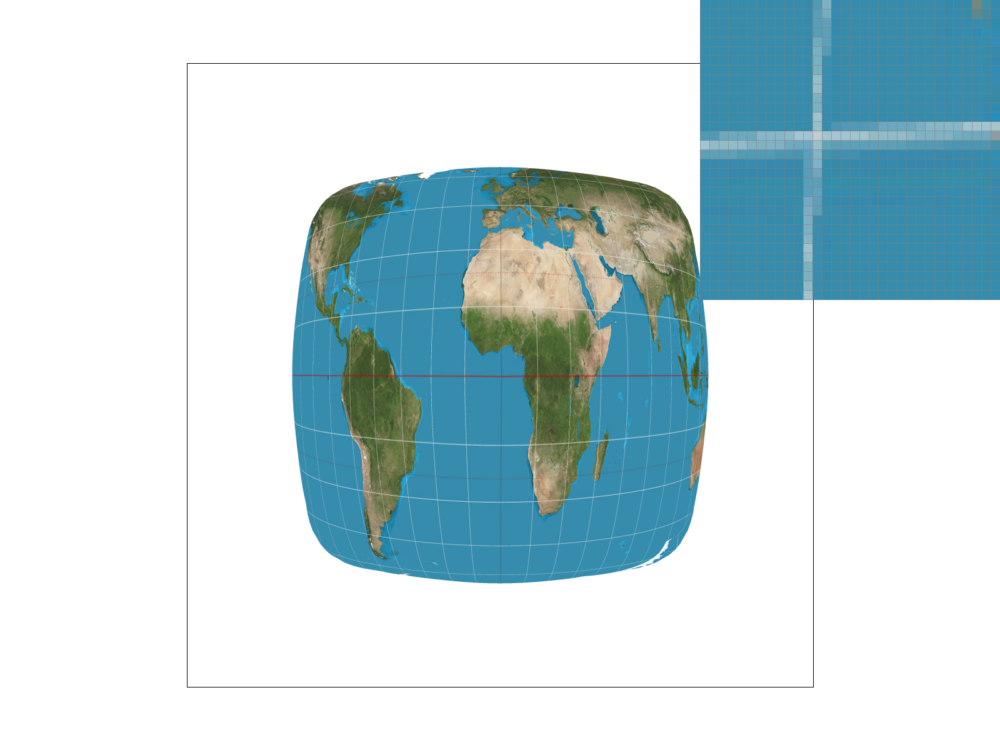 |
|
In the example shown above we can see that bilinear sampling seems to alleivate some of the "jumping" that the nearest pixel sampling creates where the lines are abruptly cut off that are not intentional in the original map image.
The differences between the two sampling methods primarily is that bilinear aims to alleviate the jaggies and moire effect that arises from sampling from a texture at a different resolution (which will result in magnification or minification depending on the resolution difference of the texture map and what is being displayed).
These two method will be drastically different when the pixel footprint is different from the texture map resolution; for example in magnification where the pixel footprint is greater than the texture map's resolution, nearest sampling will result in a crisp-like image with clearly differentiated pixels, which may be desired but can appear as less clear and "pixel-y", while bilinear will provide a slightly clearer image and discernable with it interpolating colors of its neighboring texels for each sample to make it more clear.
Task 6: "Level Sampling" with mipmaps for texture mapping
Level sampling uses something called mip maps which are lower resolution versions of textures (with high frequencies removed) and are stored at different levels varying from the zero-th mipmap which is the original texture, and increasing as the original texture's resolution decreases. The idea is to calculate at each pixel of a pixel footprint, calculate the mipmap level that most resembles its screen sampling rate via a formula that calculates the amount of change occurs when moving along the x-axis and y-axis of a pixel, and using the mipmap level outputted by the formula, you sample from that specific mipmap texture instead.
Supersampling is quite effective at anti-aliasing jaggies and making shapes look a lot smoother around the edges, however it comes at a significant performance tradeoff since for a sample rate of n and a initial performance of the overall rasterization process as O(f(x)), super sampling would yield O(n*f(x)) every single frame which can be heavy on computation and slow down the overall rendering process. Pixel sampling also has added memory costs well since you must temporarily expand the sample_buffer by the sample rate in order to super sample at each pixel every single frame. So if you're rendering something at a resolution of w x h and supersampling at a sample rate of n = 16, you'd have to then expand your sample buffer from w*h elements long to 16*w*h elements long in order to super sample.
Pixel sampling is useful for texture mapping with bilinear sampling being quite useful in eliminating aliasing effects from textures. The tradeoffs by using bilinear sampling however is it requires several more calculations during the sampling of each pixel, with in place of simply sampling the texel with the nearest UV (nearest sampling), bilinear must calculate the interpolation between each pair of pixels and then interpolate the results of those. In terms of memory, bilinear does have to allocate memory for the 4 neighboring texels to interpolate. Bilinear sampling does alleviate alot of the aliasing effects compared to nearest sampling that can be seen as "pixel-y" and unclear, so it is the superior method visually when trying to get rid of the hard edges within textures.
Level sampling is another technique to help alleviate aliasing effects within texture sampling, specifically in the context where your pixel footprint does not match your texture map's resolution. The performance tradeoffs with using the nearest mipmap is simply added calculation to calculate the current mipmap level at the current pixel. However with linear level sampling, it requires an additional interpolation calculation to interpolate between the two "sandwiching" mipmap levels every frame instead of calculating the level and using that texture like how the nearest sampling works. Regarding memory, level sampling in general does require the need to create mipmaps for textures at each level before hand which can stack up if you have many textures you're performing level sampling on. Additionally, using linear level sampling will also need to allocate additional memory when access the two sandwiching mipmap levels and calculating the interpolation between them.|
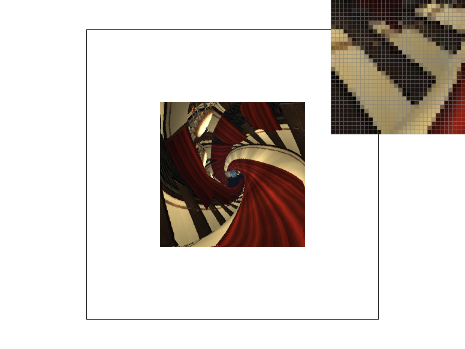 |
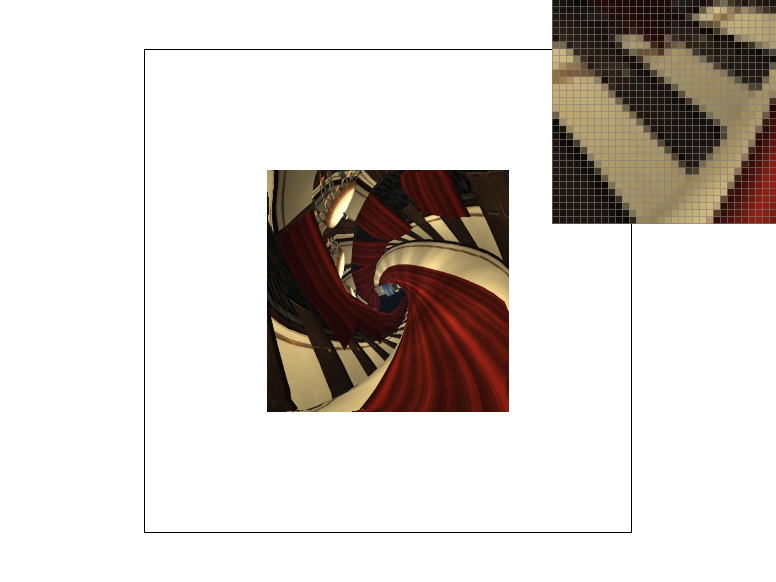 |
|
|
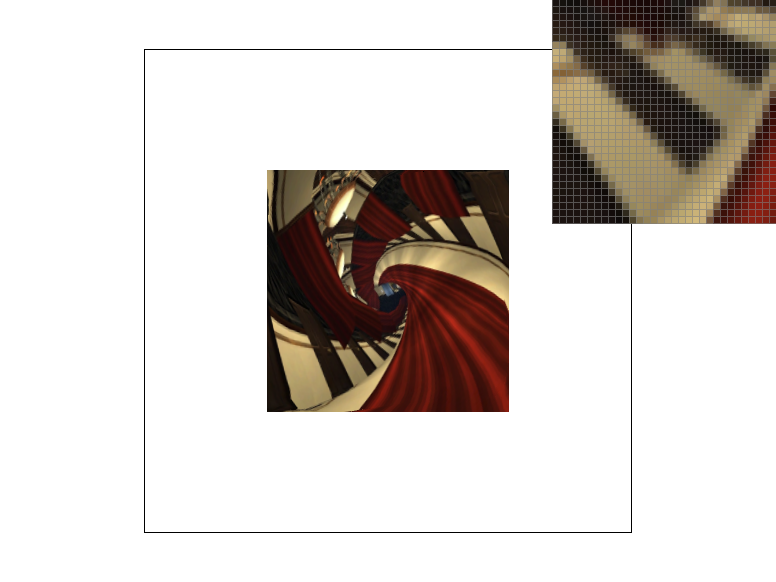 |